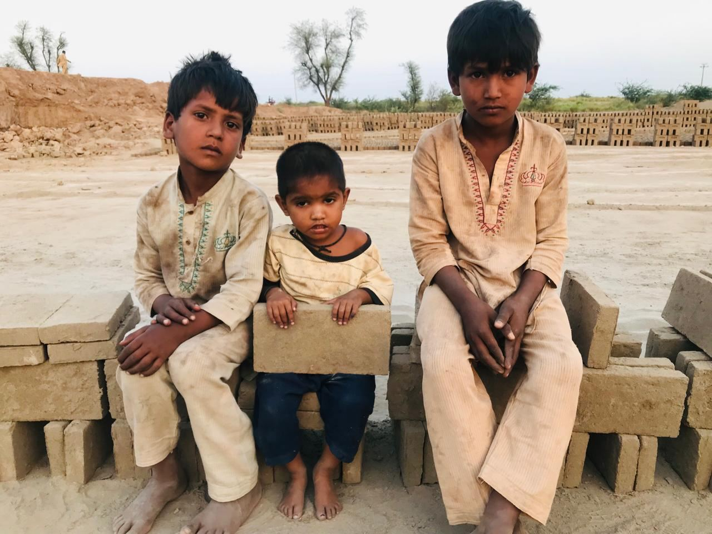
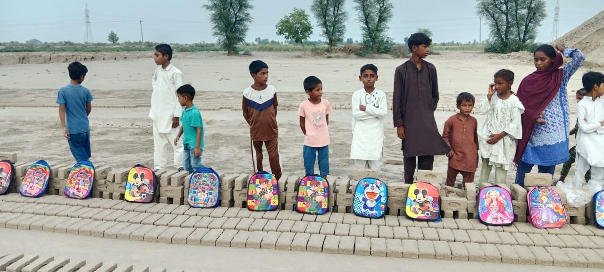

One of the most important things we can do for brick kiln families is invest in their children. Children are our future. If we educate them today, we can help them live in freedom tomorrow.

For generations, many children in brick kilns have never had the chance to go to school. Their families cannot afford education, and instead of sitting in a classroom, they spend their days working alongside their parents, making bricks. The little hands that should be holding pencils and books are forced to carry heavy bricks under the hot sun.
This is a cycle that repeats from one generation to the next. Parents who were never educated often have no choice but to continue working in bonded labor, and their children grow up facing the same future.
We believe that cycle can be broken.

Our vision is to provide these children with a safe place to learn — where they can receive a quality education, develop practical skills, and discover the gifts God has placed within them.
Education gives children hope. It teaches them to read, write, think, and dream. It opens doors to careers, businesses, and opportunities that would otherwise be impossible.
We want to build schools where these children are welcomed, loved, and encouraged. We want to equip them with knowledge, character, and vocational skills so they can grow into responsible, successful adults who are able to support themselves and their families with dignity.
When we educate a child, we are not just changing one life. We are changing an entire family's future. By giving these children an education instead of a lifetime of labor, we help ensure that they will never have to return to the chains of slavery that trapped previous generations.
We may not be able to change the whole world at once, but we can change the world for one child at a time. And sometimes, that is where lasting change begins.